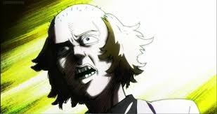

| strength's | weakness's |
|---|---|
| psychic power | cocky |
| mob's rival | wears a wig |
| better than mob in everything (except psychic powers) |
 Before meeting Mob, Teru didn't know any other espers, so he greatly overestimated his own importance and power. He was very popular and often strategically used telekinesis to benefit himself. For example, he threw nothing but strikes the first time he went bowling. He considered himself the main protagonist of the world. Since his defeat, Teru has come to terms with reality, but he is still confident in his strong and diverse psychic powers. He seems to adhere to Mob's policy of not using psychic power against people unless absolutely necessary. He is motivated to stop others from succumbing to pride like he once did, but he is still concerned about his outward appearance and still seeks perfection in all his endeavours. He has been known to hold people upside-down and dunk them in a bucket of water until they tell him what he wants to hear. While he is noted to be a good leader, he apparently has trouble remaining humble.[2] The shock of defeat seems to give him a fever.[3]